── Attaching core tidyverse packages ──────────────────────── tidyverse 2.0.0 ──
✔ dplyr 1.1.4 ✔ readr 2.1.5
✔ forcats 1.0.0 ✔ stringr 1.5.1
✔ ggplot2 3.5.1 ✔ tibble 3.2.1
✔ lubridate 1.9.3 ✔ tidyr 1.3.1
✔ purrr 1.0.2
── Conflicts ────────────────────────────────────────── tidyverse_conflicts() ──
✖ dplyr::filter() masks stats::filter()
✖ dplyr::lag() masks stats::lag()
ℹ Use the conflicted package (<http://conflicted.r-lib.org/>) to force all conflicts to become errorsData Visualization in R
R
Data cleaning
Data Analysis
Data Visualization
Introduction
This tutorial demonstrates data visualization techniques using the ggplot2 package in R, applied to the airquality dataset.
Setup
First, we load the necessary libraries and the dataset.
Part 1: Discussing the Dataset
The airquality dataset includes the following variables:
- Ozone: Ozone concentration (ppb)
- Solar.R: Solar radiation (lang)
- Wind: Wind speed (mph)
- Temp: Temperature (degrees F)
- Month: Month (5 to 9, representing May to September)
- Day: Day of the month (1 to 31)
Let’s view the first few rows and a summary of the dataset.
Code
head(airquality) Ozone Solar.R Wind Temp Month Day
1 41 190 7.4 67 5 1
2 36 118 8.0 72 5 2
3 12 149 12.6 74 5 3
4 18 313 11.5 62 5 4
5 NA NA 14.3 56 5 5
6 28 NA 14.9 66 5 6Code
summary(airquality) Ozone Solar.R Wind Temp
Min. : 1.00 Min. : 7.0 Min. : 1.700 Min. :56.00
1st Qu.: 18.00 1st Qu.:115.8 1st Qu.: 7.400 1st Qu.:72.00
Median : 31.50 Median :205.0 Median : 9.700 Median :79.00
Mean : 42.13 Mean :185.9 Mean : 9.958 Mean :77.88
3rd Qu.: 63.25 3rd Qu.:258.8 3rd Qu.:11.500 3rd Qu.:85.00
Max. :168.00 Max. :334.0 Max. :20.700 Max. :97.00
NA's :37 NA's :7
Month Day
Min. :5.000 Min. : 1.0
1st Qu.:6.000 1st Qu.: 8.0
Median :7.000 Median :16.0
Mean :6.993 Mean :15.8
3rd Qu.:8.000 3rd Qu.:23.0
Max. :9.000 Max. :31.0
Part 2: Creating Plots with ggplot2
We will create several types of plots to explore the dataset:
- Bar Chart (Categorical Comparison)
- Line Chart (Time Series)
- Point/Scatter Plot (Relationships)
- Heatmap (Matrix Data)
- Box Plot + Violin (Distribution)
- Faceted Plots (Small Multiples)
1. Bar Charts
1.1. Basic Bar Chart
Code
# Monthly ozone averages
monthly_ozone <- airquality %>%
group_by(Month) %>%
summarize(MeanOzone = mean(Ozone, na.rm = TRUE))
# Basic bar plot
ggplot(monthly_ozone, aes(x = factor(Month), y = MeanOzone)) +
geom_bar(stat = "identity") +
labs(title = "Average Ozone by Month",
x = "Month", y = "Ozone (ppb)")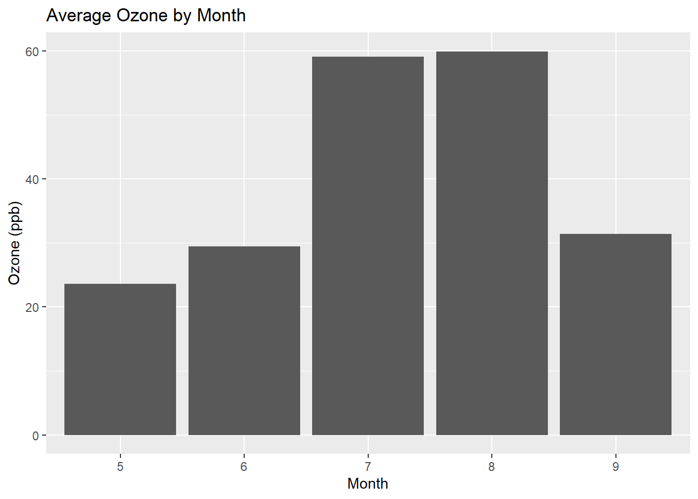
1.2. Customize Bar Chart
Code
ggplot(monthly_ozone, aes(x = factor(Month, labels = month.abb[5:9]),
y = MeanOzone,
fill = MeanOzone)) +
geom_bar(stat = "identity", width = 0.8, color = "black", alpha = 0.9) +
geom_text(aes(label = round(MeanOzone, 1)), vjust = -0.5, size = 4, fontface = "bold") +
scale_fill_gradient(low = "#56B1F7", high = "#132B43", name = "Ozone Level") +
labs(title = "Summer Ozone Concentrations (1973)",
subtitle = "New York City Air Quality Dataset",
x = "Month", y = "Mean Ozone (ppb)",
caption = "Data source: R airquality dataset") +
theme_minimal() +
theme(
plot.title = element_text(size = 18, face = "bold", color = "#2c3e50"),
plot.subtitle = element_text(size = 12, color = "#7f8c8d"),
axis.title.x = element_text(size = 12, margin = margin(t = 10)),
axis.title.y = element_text(size = 12, margin = margin(r = 10)),
panel.grid.major.x = element_blank(),
legend.position = "none"
) +
ylim(0, max(monthly_ozone$MeanOzone) * 1.1)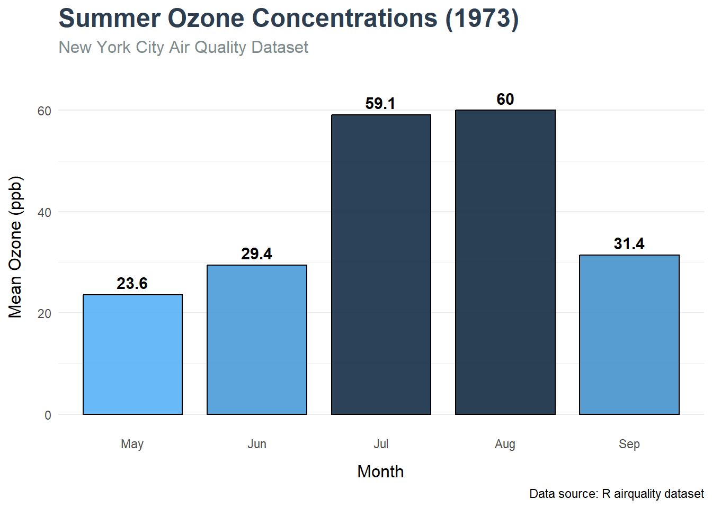
1.3. Publication quality bar chart
Code
# Prepare data
monthly_ozone <- airquality %>%
group_by(Month) %>%
summarize(MeanOzone = mean(Ozone, na.rm = TRUE)) %>%
mutate(Month = factor(Month, labels = month.abb[5:9]))
# Simplified publication plot
ggplot(monthly_ozone, aes(x = Month, y = MeanOzone)) +
# Clean geometric elements
geom_col(width = 0.7, fill = "#3a7ca5", color = "black", linewidth = 0.3) +
geom_text(aes(label = round(MeanOzone, 1)),
vjust = -0.5, size = 3.2, color = "black") +
# Minimal scaling
scale_y_continuous(expand = expansion(mult = c(0, 0.1))) +
# Essential labels
labs(
x = NULL,
y = "Ozone concentration (ppb)",
title = "Monthly ozone levels (New York, 1973)"
) +
# Classic minimal theme
theme_classic(base_size = 11) +
theme(
plot.title = element_text(size = 12, face = "bold", hjust = 0.5),
axis.line = element_line(color = "black"),
axis.text = element_text(color = "black"),
axis.ticks = element_line(color = "black"),
panel.background = element_rect(fill = "white"),
plot.background = element_rect(fill = "white")
)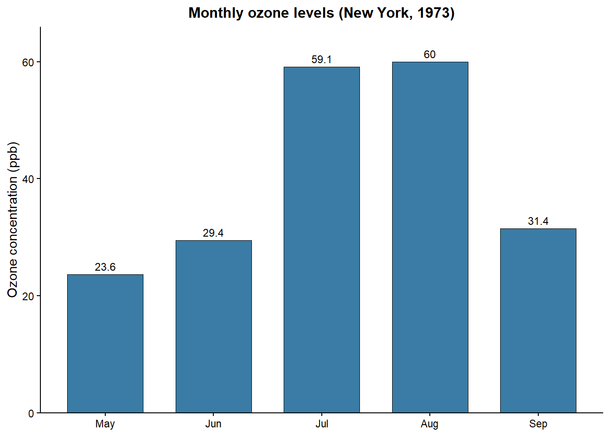
2. Line Charts
2.1. Basic Line Charts
2.2. Customize Line Chart
Code
ggplot(airquality, aes(x = Date, y = Temp)) +
geom_line(color = "#3498db", linewidth = 1, alpha = 0.8) +
geom_point(data = subset(airquality, Temp > 90),
color = "#e74c3c", size = 3, alpha = 0.9) +
geom_smooth(method = "loess", se = FALSE, color = "#2c3e50", linetype = "dashed") +
scale_x_date(date_labels = "%b %d", date_breaks = "2 weeks") +
labs(title = "1973 New York Temperature Trend",
subtitle = "Daily measurements with heat wave highlights (red points >90°F)",
x = "Date", y = "Temperature (°F)",
caption = "May 1 - September 30, 1973") +
theme_bw() +
theme(
plot.title = element_text(size = 16, face = "bold", hjust = 0.5),
plot.subtitle = element_text(size = 10, hjust = 0.5, color = "#7f8c8d"),
panel.grid.minor = element_blank(),
panel.border = element_rect(color = "gray50", fill = NA),
plot.background = element_rect(fill = "#ecf0f1"),
axis.text.x = element_text(angle = 45, hjust = 1)
) +
annotate("text", x = as.Date("1973-07-15"), y = 95,
label = "Summer Heat Wave", color = "#e74c3c", fontface = "bold")`geom_smooth()` using formula = 'y ~ x'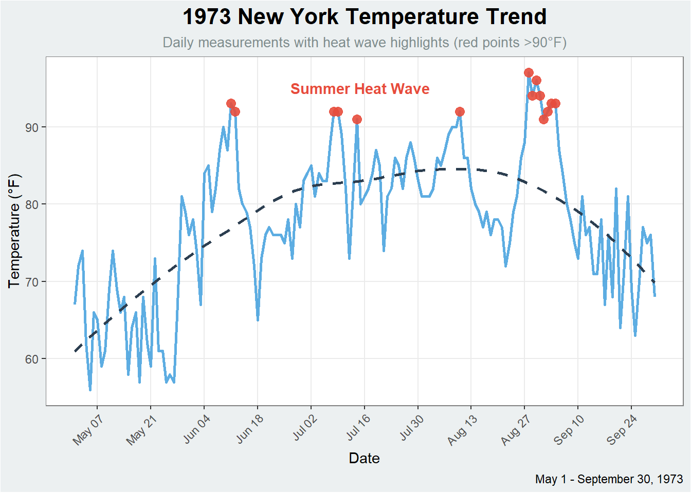
2.3. Publication quality line chart
Code
# Create proper Date using lubridate
airquality <- airquality %>%
mutate(Date = ymd(paste(1973, Month, Day, sep = "-")))
# Publication-ready plot
ggplot(airquality, aes(x = Date, y = Temp)) +
# Core plot elements
geom_line(color = "black", linewidth = 0.4) +
geom_point(
data = ~ filter(., Temp > 90),
color = "red",
size = 1.5,
shape = 17
) +
# Lubridate-powered date formatting
scale_x_date(
name = NULL,
date_breaks = "1 month",
date_labels = "%b",
expand = expansion(mult = 0.02)
) +
scale_y_continuous(
name = "Temperature (°F)",
limits = c(50, 100),
breaks = seq(50, 100, by = 10)
) +
labs(
title = "Daily Temperature Record (1973)"
) +
theme_classic(base_size = 10) +
theme(
plot.title = element_text(size = 11, face = "bold", hjust = 0, margin = margin(b = 5)),
axis.line = element_line(linewidth = 0.3),
axis.ticks = element_line(linewidth = 0.3),
axis.text = element_text(color = "black", size = 9),
plot.margin = margin(5, 5, 5, 5)
)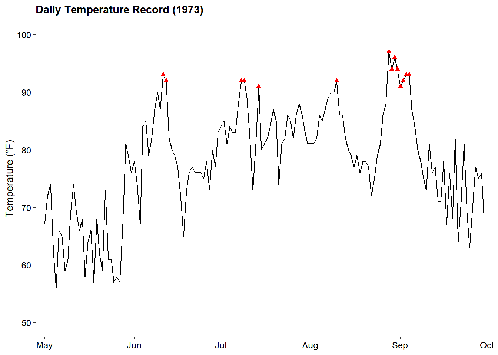
3. Scatter Plot
3.1. Basic Scatter Plot
Code
# Basic scatter plot
ggplot(airquality, aes(x = Wind, y = Ozone)) +
geom_point() +
labs(title = "Ozone vs Wind Speed", x = "Wind (mph)", y = "Ozone (ppb)")Warning: Removed 37 rows containing missing values or values outside the scale range
(`geom_point()`).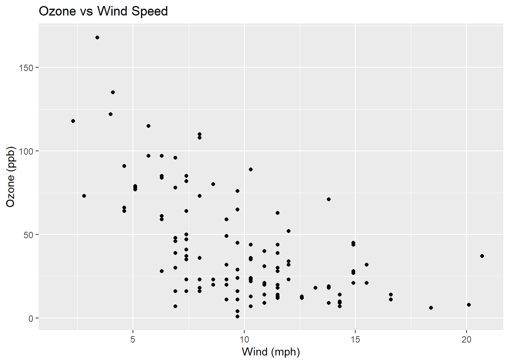
3.2. Customize Scatter Chart
Code
ggplot(airquality, aes(x = Wind, y = Ozone, color = Temp, size = Solar.R)) +
geom_point(alpha = 0.8, size = 2) +
geom_smooth(method = "lm", se = FALSE, color = "#e74c3c") +
scale_color_gradientn(colors = c("#3498db", "#f1c40f", "#e74c3c"),
name = "Temp (°F)") +
scale_size_continuous(range = c(2, 8), name = "Solar Radiation") +
labs(title = "Air Quality Relationships",
subtitle = "Ozone levels vs Wind Speed (Color: Temperature, Size: Solar Radiation)",
x = "Wind Speed (mph)", y = "Ozone Concentration (ppb)",
caption = "Data from May-September 1973 in New York") +
theme_linedraw() +
theme(
legend.position = "bottom",
legend.box = "horizontal",
legend.title = element_text(face = "bold"),
plot.title = element_text(size = 16, face = "bold", color = "#2c3e50"),
panel.grid.major = element_line(color = "gray90"),
panel.background = element_rect(fill = "#f9f9f9")
) +
guides(
color = guide_colorbar(barwidth = 15, title.position = "top"),
size = guide_legend(nrow = 1, title.position = "top")
) +
facet_wrap(~Month, labeller = labeller(Month = setNames(month.abb[5:9], 5:9)))Warning: Using `size` aesthetic for lines was deprecated in ggplot2 3.4.0.
ℹ Please use `linewidth` instead.`geom_smooth()` using formula = 'y ~ x'Warning: Removed 37 rows containing non-finite outside the scale range
(`stat_smooth()`).Warning: The following aesthetics were dropped during statistical transformation: size.
ℹ This can happen when ggplot fails to infer the correct grouping structure in
the data.
ℹ Did you forget to specify a `group` aesthetic or to convert a numerical
variable into a factor?
The following aesthetics were dropped during statistical transformation: size.
ℹ This can happen when ggplot fails to infer the correct grouping structure in
the data.
ℹ Did you forget to specify a `group` aesthetic or to convert a numerical
variable into a factor?
The following aesthetics were dropped during statistical transformation: size.
ℹ This can happen when ggplot fails to infer the correct grouping structure in
the data.
ℹ Did you forget to specify a `group` aesthetic or to convert a numerical
variable into a factor?
The following aesthetics were dropped during statistical transformation: size.
ℹ This can happen when ggplot fails to infer the correct grouping structure in
the data.
ℹ Did you forget to specify a `group` aesthetic or to convert a numerical
variable into a factor?
The following aesthetics were dropped during statistical transformation: size.
ℹ This can happen when ggplot fails to infer the correct grouping structure in
the data.
ℹ Did you forget to specify a `group` aesthetic or to convert a numerical
variable into a factor?Warning: Removed 37 rows containing missing values or values outside the scale range
(`geom_point()`).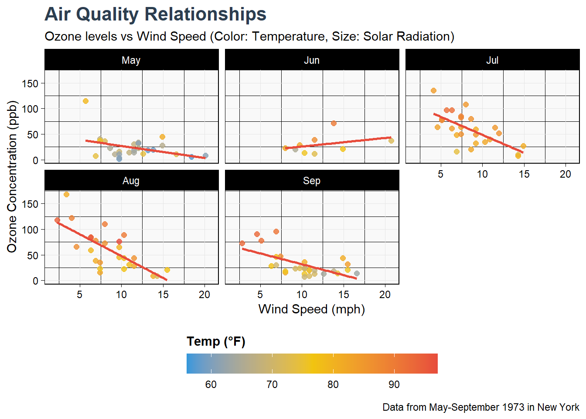
3.3. Publication quality scatter chart
Code
# Publication-ready scatterplot
ggplot(airquality, aes(x = Wind, y = Ozone)) +
# Core plot elements
geom_point(
aes(color = Temp, size = Solar.R),
alpha = 0.7,
shape = 16
) +
geom_smooth(
method = "lm",
formula = y ~ x,
se = FALSE,
color = "black",
linewidth = 0.5,
linetype = "dashed"
) +
# Clean scaling
scale_color_gradient(
low = "#0571b0",
high = "#ca0020",
name = "Temperature (°F)",
guide = guide_colorbar(
barwidth = unit(3, "cm"),
title.position = "top"
)
) +
scale_size_continuous(
range = c(1, 5),
name = "Solar Radiation (lang)",
breaks = c(100, 200, 300),
guide = guide_legend(
title.position = "top",
nrow = 1
)
) +
# Minimal labels
labs(
x = "Wind Speed (mph)",
y = "Ozone Concentration (ppb)",
title = "Ozone-Wind Relationship by Month"
) +
# Facet styling
facet_wrap(
~Month,
ncol = 3,
labeller = labeller(Month = setNames(month.abb[5:9], 5:9))
) +
# Publication theme
theme_minimal(base_size = 10) +
theme(
panel.grid.minor = element_blank(),
panel.grid.major = element_line(linewidth = 0.2, color = "grey90"),
strip.background = element_rect(fill = "grey95", color = NA),
strip.text = element_text(face = "bold", size = 9),
legend.position = "bottom",
legend.box = "horizontal",
legend.spacing.x = unit(0.5, "cm"),
plot.title = element_text(face = "bold", hjust = 0.5, size = 11),
axis.title = element_text(size = 9),
panel.spacing = unit(0.8, "lines")
)Warning: Removed 37 rows containing non-finite outside the scale range
(`stat_smooth()`).Warning: Removed 42 rows containing missing values or values outside the scale range
(`geom_point()`).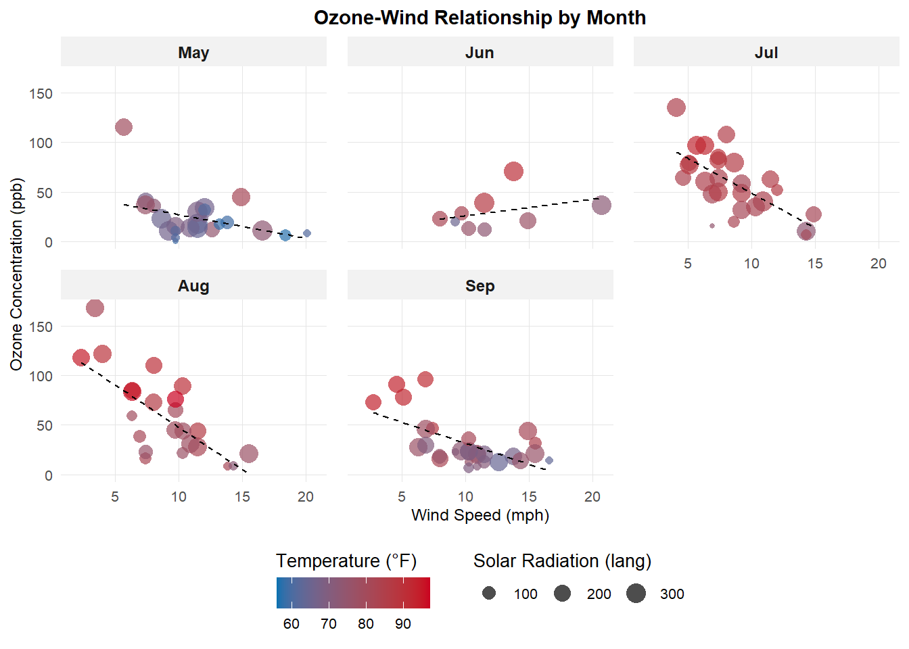
4. Heatmap
4.1. Basic Heatmap
Code
`summarise()` has grouped output by 'Month'. You can override using the
`.groups` argument.Code
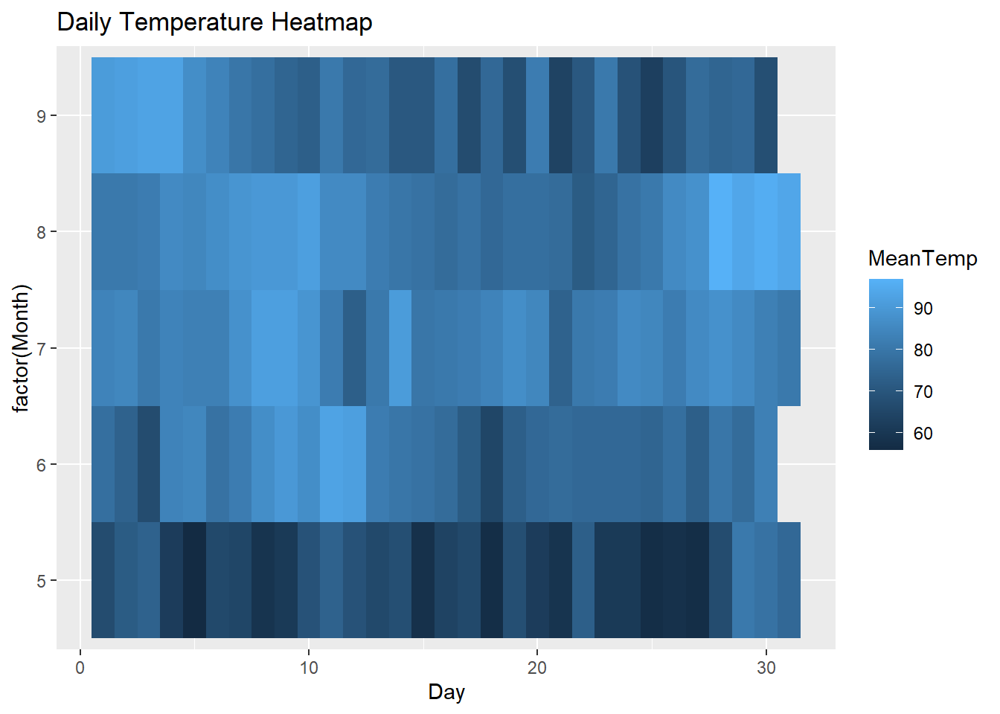
4.2. Customize Heatmap
Code
ggplot(heat_data, aes(x = Day, y = factor(Month, labels = month.abb[5:9]), fill = MeanTemp)) +
geom_tile(color = "white", linewidth = 0.3) +
scale_fill_gradientn(colors = c("#4575b4", "#ffffbf", "#d73027"),
name = "Temp (°F)") +
scale_x_continuous(breaks = seq(1, 31, 5)) +
labs(title = "1973 Temperature Patterns",
subtitle = "Daily temperatures by month",
x = "Day of Month", y = "Month") +
coord_fixed(ratio = 0.8) +
theme_minimal() +
theme(
plot.title = element_text(face = "bold", size = 16, hjust = 0.5),
plot.subtitle = element_text(hjust = 0.5, color = "#7f8c8d"),
axis.text = element_text(size = 10),
legend.position = "right",
panel.grid = element_blank()
)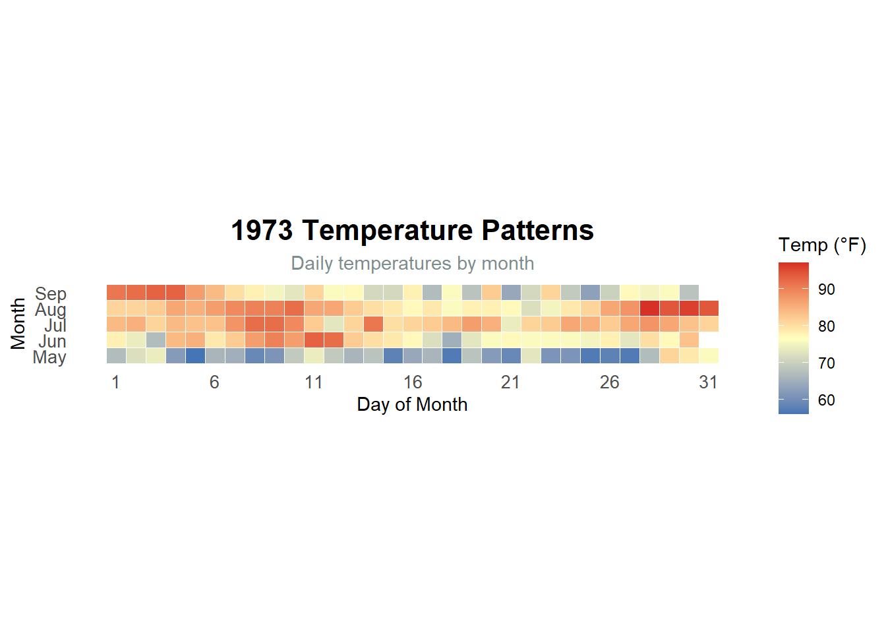
5. Box Plot + Violin Plot
5.1. Create Box plot with violin
Code
ggplot(airquality, aes(x = factor(Month, labels = month.abb[5:9]), y = Ozone, fill = factor(Month))) +
geom_violin(alpha = 0.7, trim = FALSE) +
geom_boxplot(width = 0.2, fill = "white", alpha = 0.7, outlier.color = "red") +
scale_fill_brewer(palette = "Set2", name = "Month") +
labs(title = "Ozone Distribution by Month",
subtitle = "Violin plots show distribution density, boxplots show quartiles",
x = "Month", y = "Ozone (ppb)") +
theme_bw() +
theme(
plot.title = element_text(face = "bold", size = 16),
legend.position = "none",
panel.grid.major.x = element_blank(),
axis.text.x = element_text(size = 11, face = "bold")
) +
stat_summary(fun = mean, geom = "point", shape = 18, size = 3, color = "black") +
annotate("text", x = 3, y = 150, label = "Red points = outliers\nDiamond = mean",
color = "#2c3e50", size = 3.5)Warning: Removed 37 rows containing non-finite outside the scale range
(`stat_ydensity()`).Warning: Removed 37 rows containing non-finite outside the scale range
(`stat_boxplot()`).Warning: Removed 37 rows containing non-finite outside the scale range
(`stat_summary()`).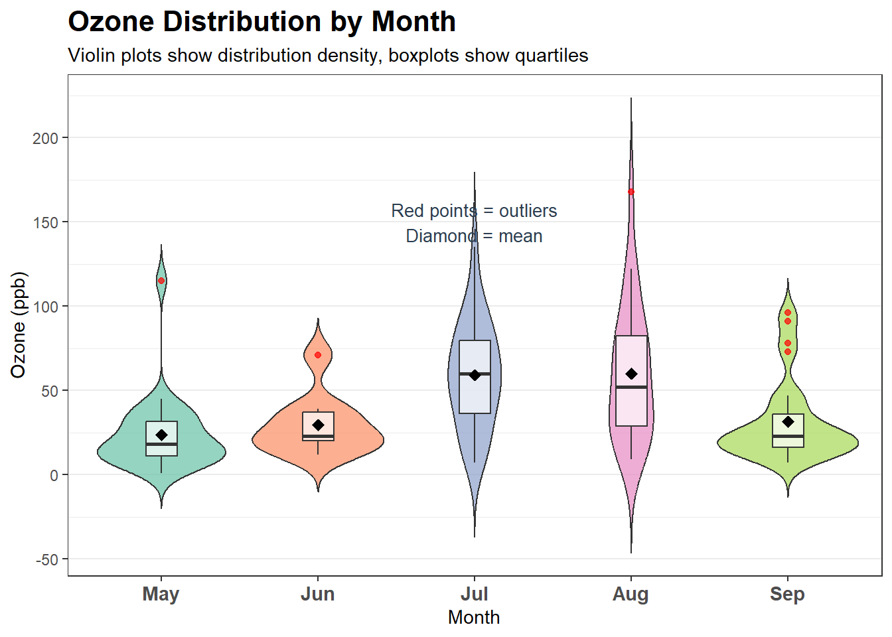
6. Faceted Plots
Code
# Create temperature category
airquality <- airquality %>%
mutate(TempCategory = cut(Temp, breaks = c(0, 70, 80, 100),
TempCategory = factor(TempCategory,
labels = c("Cool (<70°F)", "Mild (70-80°F)", "Warm (>80°F)"))))
ggplot(airquality, aes(x = Wind, y = Solar.R, color = Ozone)) +
geom_point(alpha = 0.8, size = 3) +
geom_smooth(method = "lm", se = FALSE, color = "red") +
scale_color_gradient(low = "blue", high = "red", name = "Ozone Level") +
labs(title = "Solar Radiation vs Wind Speed",
subtitle = "Faceted by temperature ranges",
x = "Wind Speed (mph)", y = "Solar Radiation (lang)") +
facet_wrap(~TempCategory, ncol = 2) +
theme_bw() +
theme(
strip.background = element_rect(fill = "#2c3e50"),
strip.text = element_text(color = "white", face = "bold"),
panel.spacing = unit(1, "lines"),
legend.position = "bottom"
) +
guides(color = guide_colorbar(barwidth = 15, title.position = "top"))`geom_smooth()` using formula = 'y ~ x'Warning: Removed 7 rows containing non-finite outside the scale range
(`stat_smooth()`).Warning: Removed 7 rows containing missing values or values outside the scale range
(`geom_point()`).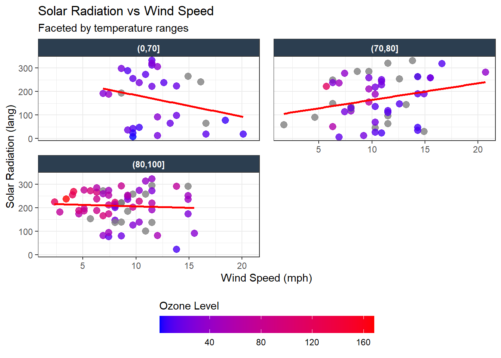